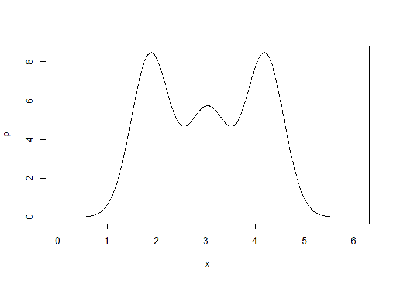
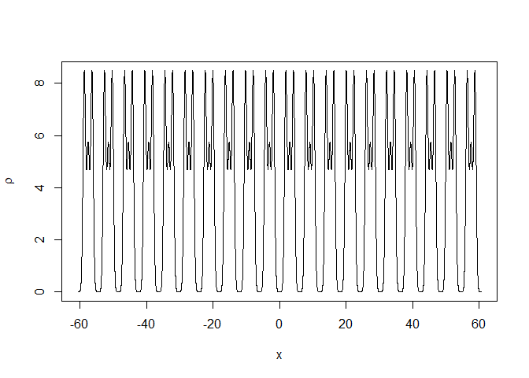
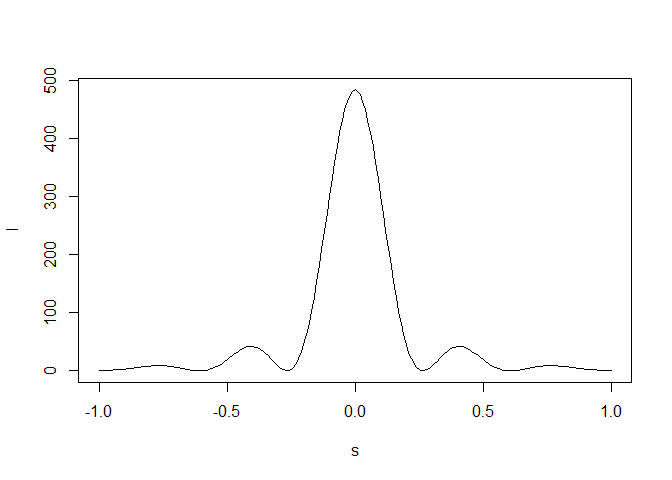
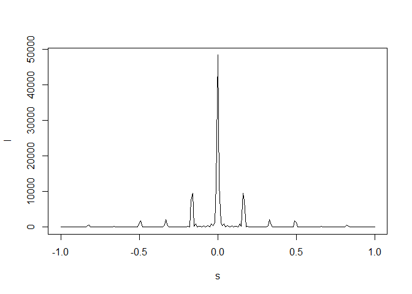

The goal of crone is to carry out most of the task and calculations of structural crystallography using 1D crystal structure models. The 1D models included with the package are taken from existing linear chemical molecules. A full description of the theory behind 1D crystallography and the crone package can be studied in this article. The package is aimed at undergraduate and graduate students that need to be trained in structural crystallography or in the development of methods for structural crystallography.
Installation
You can install the released version of crone from CRAN with:
install.packages("crone")And the development version from GitHub with:
# install.packages("devtools")
devtools::install_github("jfoadi/crone")Example
Structures are stored in named lists of type sdata:
library(crone)
# Load carbon dioxide
sdata <- load_structure("carbon_dioxide")
# sdata includes:
# cell length(a), space group (SG),atoms position (x0),
# atomic numbers (Z),B-factors (B), occupancies (occ)
sdata
#> $a
#> [1] 6.066
#>
#> $SG
#> [1] "P-1"
#>
#> $x0
#> [1] 1.870 3.033
#>
#> $Z
#> [1] 8 6
#>
#> $B
#> [1] 10.000 13.333
#>
#> $occ
#> [1] 1.0 0.5Once a structure is loaded (or created from scratch), the ideal electron density can be calculated and plotted:
rtmp <- structure_gauss(sdata=sdata,N=1000)
plot(rtmp$x,rtmp$rr,type="l",
xlab=expression(x),ylab=expression(rho))
The repeated motive in the unit cell can be plotted for several unit cells:
x <- seq(-sdata$a*10,sdata$a*10,length=20000)
rtmp <- structure_gauss(sdata=sdata,x=x)
plot(rtmp$x,rtmp$rr,type="l",
xlab=expression(x),ylab=expression(rho))
A diffraction pattern due to just one unit cell or to multiple unit cells is created with function diffraction:
# One unit cell
dtmp <- diffraction(sdata=sdata,D=1,Ncell=1)
plot(dtmp$xstar,dtmp$Imod,type="l",xlab=expression(s),
ylab=expression(I))
# 10 unit cells
dtmp <- diffraction(sdata=sdata,D=1,Ncell=10)
plot(dtmp$xstar,dtmp$Imod,type="l",xlab=expression(s),
ylab=expression(I))
Many more examples can be studied in the five tutorials included as package vignettes. The first three tutorials are set at an introductory/intermediate level; the last two tutorials are more difficult to digest.
Reference
Details of the theory and algorithms behind crone can be found in: E. Smith, G. Evans and J. Foadi (2017), “An effective introduction to structural crystallography using 1D Gaussian atoms”, Eur. J. Phys. 38, link